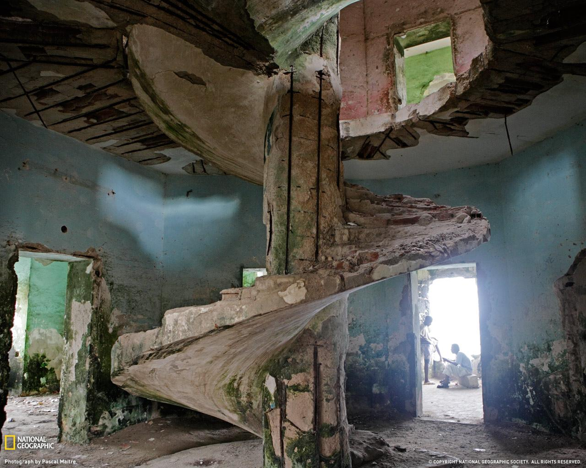

With friends? Attempt a summoning!If the stories are true then there are many spirits lurking around the ancient building. Why not bring a ouija board and see what they have to say? remember to only do this with friends, summoning alone can have unintended consequences |
Alone? Explore!From the towering balcony to the hidden caves in the rock, tillamook rock is full of crevaces to explore. check out the dark basement, the ancient exterior, the old lamp at the top of the building, each feature reveals more and more about the history of this creepy, but historic, building. |
 |
Learn about the history!tillamook rock lighthouse was constructed in 1881 to help sdailors navigate the dangerous tillamook head, a run so difficult sailor coined it "the terrible tilly". many belive the spirits of the sailors lost to it reside in the lighthouse, now trapped and unable to move on. learn about the deep and dark history surrounding the lighthouse and the many secrets it holds. |